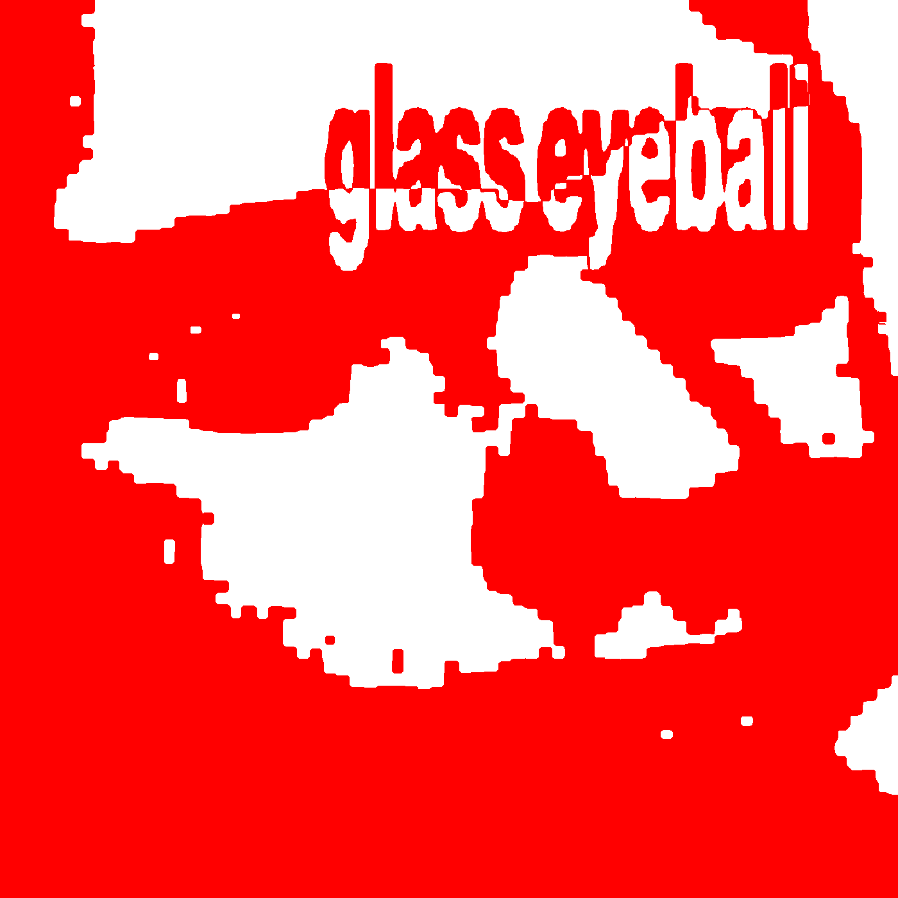

Follow me on Bandcamp
Featured albums
Newest album: Unglet12
This is Motor Machine Orchestra's sixth album and was released on January 1, 2026. It is an electronic album with the tags Ambient, Electronic, Experimental, and IDM The total number of tracks is 29, and the total album time is 01:47:33.
|
|
|

Featured album: Glass Eyeball
This is Motor Machine Orchestra's fifth album and was released on October 31, 2025. It is an electronic album with the tags Ambient, Electronic, Exiperimental, and IDM The total number of tracks is 36, and the total album time is 02:09:06.
|
|
|
|
Links
| Main Page | Bandcamp | YouTube | Spotify |